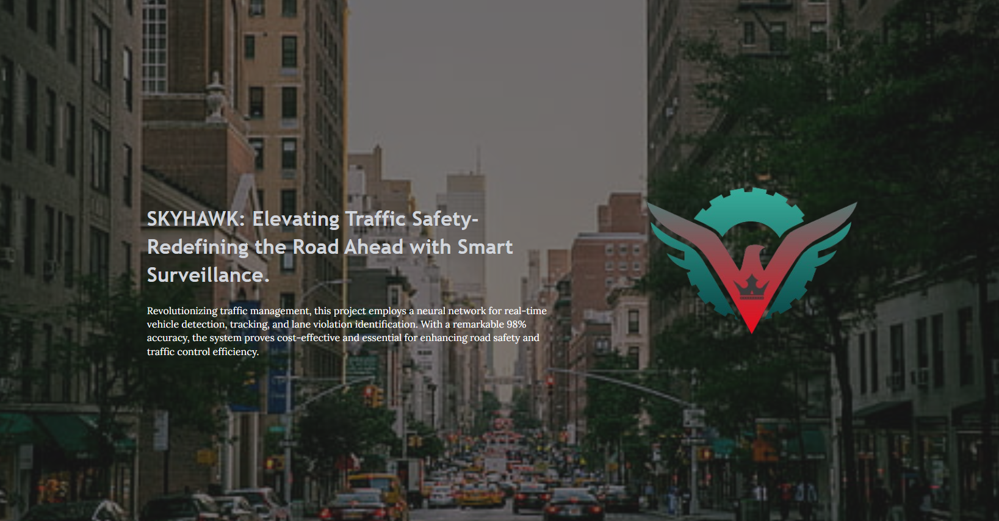

Revolutionary machine learning system for traffic rule violation detection using intelligent camera surveillance. Features real-time processing, OpenCV integration, and published research in MJSAT.
SKYHAWK represents a breakthrough in traffic safety technology, leveraging machine learning and computer vision to automatically detect traffic rule violations in real-time. The system addresses the critical need for automated traffic monitoring and enforcement in modern urban environments.
Built with Python and OpenCV, SKYHAWK processes video feeds from traffic cameras to identify various violations including speeding, red light running, illegal parking, and wrong-way driving. The system's machine learning algorithms continuously improve detection accuracy through learning from vast datasets of traffic scenarios.
High-performance real-time video processing capable of analyzing multiple camera feeds simultaneously with minimal latency for immediate violation detection.
Advanced classification system that can identify and categorize multiple types of traffic violations with high accuracy using deep neural networks.
Intelligent camera surveillance system with automatic camera control, zoom optimization, and multi-angle coverage for comprehensive monitoring.
Comprehensive analytics dashboard providing violation statistics, traffic flow analysis, and predictive insights for traffic management optimization.
SKYHAWK is built using Python with TensorFlow for deep learning and OpenCV for computer vision operations. The system employs a modular architecture with separate components for video processing, violation detection, and analytics generation.
The machine learning models are trained on extensive datasets of traffic violations and normal traffic patterns. The system uses GPU acceleration for real-time processing and implements optimized algorithms for efficient resource utilization and scalability.
SKYHAWK implements state-of-the-art deep learning models including Convolutional Neural Networks (CNNs) for image classification and Recurrent Neural Networks (RNNs) for temporal pattern analysis. The models are trained on diverse datasets covering various weather conditions, lighting scenarios, and traffic densities.
The system uses transfer learning techniques to leverage pre-trained models and fine-tune them for specific traffic violation detection tasks. Continuous learning mechanisms allow the models to adapt to new violation patterns and improve accuracy over time.
SKYHAWK was published in the MJSAT (Multidisciplinary Journal of Science and Technology) 2021, highlighting its innovative approach to traffic safety and the potential impact on urban traffic management. The publication details the technical implementation, experimental results, and comparative analysis with existing systems.
The research demonstrates significant improvements in violation detection accuracy and processing speed compared to traditional methods. The publication has contributed to the academic community's understanding of machine learning applications in traffic safety and smart city development.